Single-cell analysis — Cell cycle & connection to PCA
Quantitative biology and integrative omics
About this lecture
You cluster a single-cell dataset and two “cell types” appear — but on closer look they are the same cell type, split into a dividing half and a resting half. The cell cycle has leaked into your analysis.
The cell cycle is one of the strongest sources of cell-to-cell variation in expression, so it can dominate the data.
We score each cell for cell-cycle phase (G1 / S / G2M) from small marker gene sets.
Because it is a big axis of variation, the cycle often lines up with a principal component — closing the loop to Principal component analysis.
If the cycle is a nuisance here, we can regress it out; if proliferation is the biology, we keep it.
The broader lesson: PCA components are axes of variation — cell cycle, stress, batch, ambient RNA — so we must interpret them, not just use them.
This is an applied concept day. R is shown but not run; the goal is to understand what each step does and why.
A biology picture first
You sequence a tumour biopsy or a developing tissue. Many cells are actively dividing; others are quiescent.
A cell preparing to divide synthesises DNA, then builds the mitotic machinery — hundreds of genes switch on in a coordinated wave.
Two cells of the same type can therefore look very different in their expression profile — not because they are different, but because they are caught at different points in the cycle.
Plot the cells and the dividing ones drift off to one side, forming what looks like a separate population.
The question for today: how do we recognise this, measure it, and decide what to do about it?
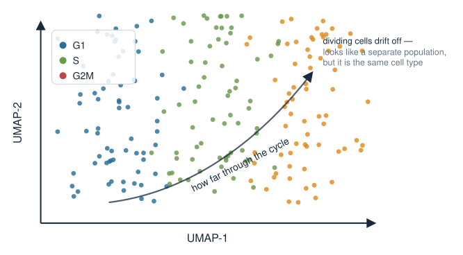
The cell cycle in one minute
The division cycle runs through ordered phases, each with a characteristic transcriptional signature:
G1 — cell grows; no strong division program yet (the “resting-looking” default).
S — DNA replication: histones and replication genes are high (e.g. PCNA, MCM family, TYMS).
G2/M — preparing for and executing mitosis: spindle and division genes are high (e.g. TOP2A, MKI67, CCNB1/2, CDK1).
We collapse this into three labels a single-cell tool can assign: G1, S, G2M.
Key point: these are sets of co-expressed genes that rise and fall together — exactly the kind of coordinated pattern that dimensionality reduction picks up.
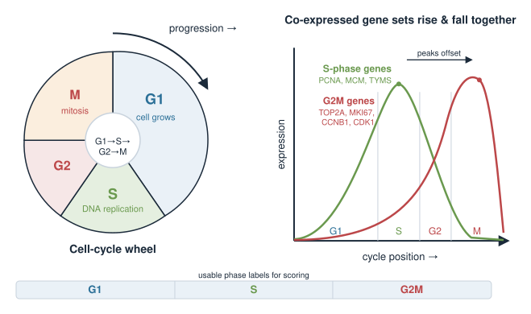
Why this is a single-cell problem
In bulk RNA-seq you average over millions of cells, so the cycle mostly washes out. In single-cell data every cell is caught at its own moment in the cycle.
Hundreds of genes vary together across cells purely because of cell-cycle position.
That coordinated variation is often larger than the difference between two related cell subtypes.
So a naive clustering or embedding can group cells by “how much are they dividing” instead of by “what are they”.
This is the classic confounder: a strong, unwanted axis of variation sitting on top of the biology you actually want.
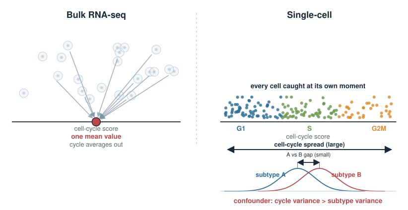
Idea: score a phase from a gene set
We do not trust any single gene (dropouts, noise). Instead we use a set of phase markers and summarise them into one number per cell — a module score.
For cell \(c\) and an S-phase gene set \(\mathcal{S}\), a simple score is the average expression of those genes:
where \(x_{gc}\) is the (log-normalised) expression of gene \(g\) in cell \(c\).
A high \(\text{Score}_S\) means the S-phase program is switched on in that cell.
We compute an analogous \(\text{Score}_{G2M}\) from the G2/M gene set.
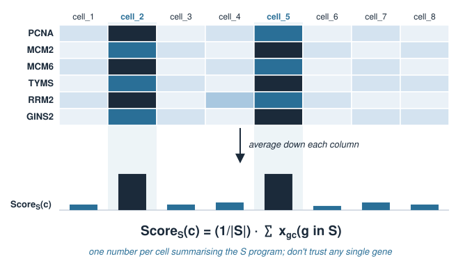
Making the score fair: a background control
A problem: some cells simply have more counts or more genes detected, inflating any average. We want a score that reflects the program, not sequencing depth.
The standard fix (the AddModuleScore idea): subtract the average expression of a matched set of control genes picked to have similar overall expression levels:
The control genes track the background a cell would show anyway, so the difference isolates the cell-cycle signal.
A score near 0 means “no more than background”; a clearly positive score means the program is active.
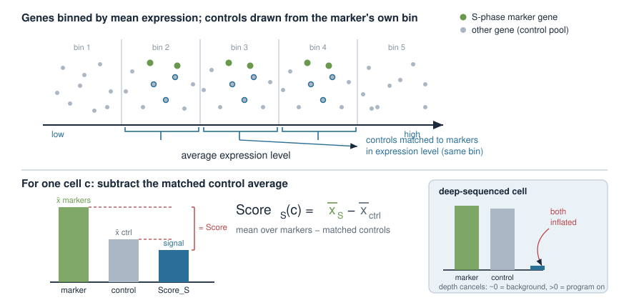
Assigning the phase
Each cell now has two numbers, \(\text{Score}_S\) and \(\text{Score}_{G2M}\). Assign a label by which program is on:
If both scores are low (near or below 0) → G1 (not obviously cycling).
If \(\text{Score}_S\) is the highest positive → S.
If \(\text{Score}_{G2M}\) is the highest positive → G2M.
This is the logic behind Seurat’s CellCycleScoring: it returns S.Score, G2M.Score, and a discrete Phase.
Now we have both a continuous readout (the scores) and a categorical one (the phase) for every cell.
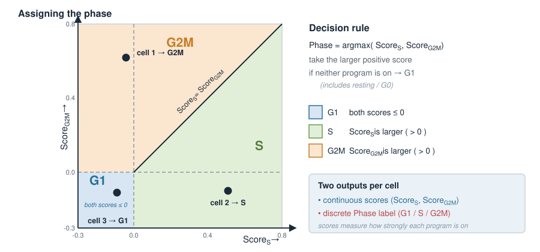
In R: score and assign phase
Using the marker sets shipped with Seurat (from Tirosh et al. 2016) — shown, not run:
library(Seurat)# Built-in curated gene setss.genes <- cc.genes.updated.2019$s.genes # S-phase markersg2m.genes <- cc.genes.updated.2019$g2m.genes # G2/M markers# obj is a Seurat object that has been normalised (LogNormalize)obj <-CellCycleScoring( obj,s.features = s.genes,g2m.features = g2m.genes,set.ident =FALSE)head(obj[[]][, c("S.Score", "G2M.Score", "Phase")])#> S.Score G2M.Score Phase#> cell_1 -0.0421 0.6215 G2M#> cell_2 0.5130 -0.1002 S#> cell_3 -0.0880 -0.1131 G1
Each cell gets two continuous scores and one phase label, stored in the metadata.
The link to PCA
Recall from Principal component analysis: PCA finds the directions of greatest variance in the data (eigenvectors of the covariance matrix). It does not know or care what those directions mean.
The cell-cycle genes are strongly co-expressed → they contribute a large chunk of variance.
So one of the top principal components frequently aligns with the cell-cycle axis.
Cells then spread along that PC by phase: G1 at one end, S and G2M at the other.
PCA is doing exactly its job — capturing the biggest variation. It just happens that here the biggest variation is dividing vs. resting, not the identity we were after.
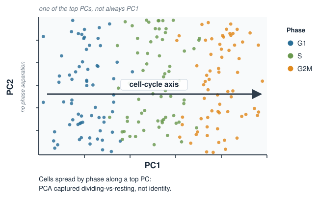
Diagnosing what a PC means
Because a PC is just a direction, we interpret it by looking at two things:
Loadings — which genes define the axis. If the top-loading genes of a PC are MKI67, TOP2A, PCNA, TYMS…, that PC is the cell cycle.
Correlation with a covariate — relate the PC scores to something we measured, e.g. the cell-cycle score.
# Correlate each cell's PC1 score with its cell-cycle scorespc1 <-Embeddings(obj, "pca")[, 1]cor(pc1, obj$S.Score) # e.g. 0.71 -> PC1 tracks the S programcor(pc1, obj$G2M.Score) # e.g. 0.66 -> ... and the G2M program
A high correlation says: this principal component is (largely) the cell cycle.
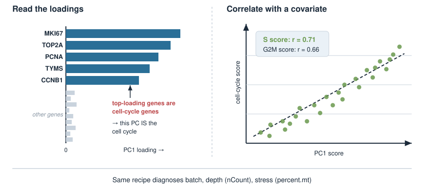
Cell cycle confounds clustering
Clustering and neighbour graphs are built on top of the PCA embedding. So if a top PC is the cell cycle:
cells of one type can be split into a “G1 cluster” and a “cycling cluster”,
or two genuinely different types can be merged because both are dividing.
Either way the clusters answer “how much is this cell dividing?” instead of “what is this cell?”.
A quick check — cross-tabulate clusters against phase:
table(Cluster =Idents(obj), Phase = obj$Phase)#> Phase#> Cluster G1 S G2M#> 0 410 12 8 <- almost all G1#> 3 18 205 190 <- almost all cycling: a cell-cycle artefact?
A cluster that is almost entirely one phase is a red flag.
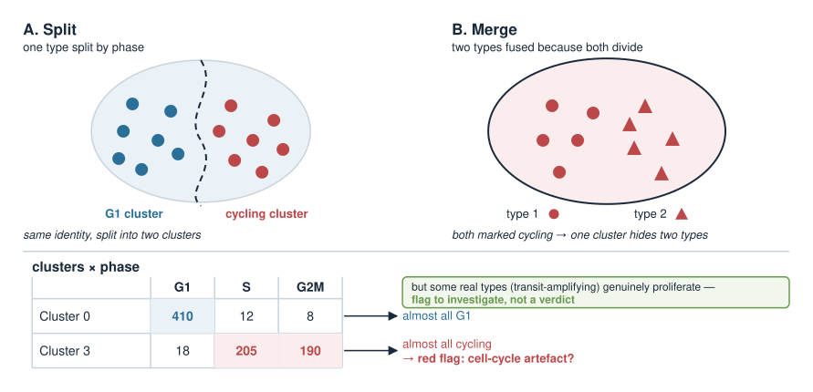
Removing the effect: regress it out
If the cell cycle is a nuisance here, we remove its contribution before PCA. The tool is one they already know: a linear model per gene.
For each gene \(g\), fit its expression across cells on the cell-cycle scores and keep the residuals:
The fitted part is the variation explained by the cell cycle.
The residual\(\varepsilon_{gc}\) is what is left after removing it — this is what we feed to PCA.
The cell-cycle axis is now flattened, so it no longer claims a top PC.
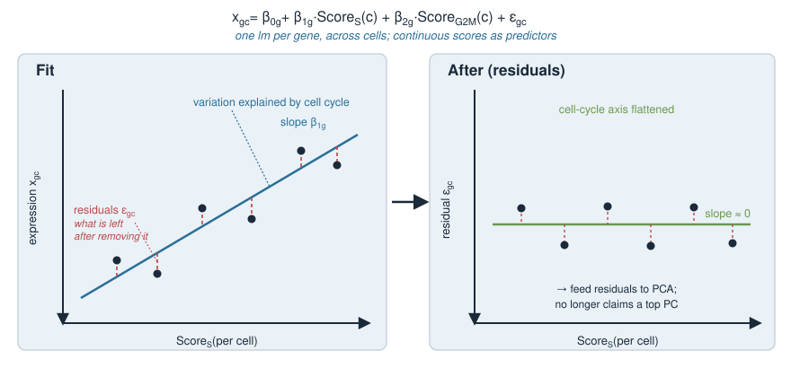
In R: regress and re-run PCA
In Seurat this happens inside ScaleData via vars.to.regress — shown, not run:
obj <-ScaleData( obj,vars.to.regress =c("S.Score", "G2M.Score"),features =rownames(obj))obj <-RunPCA(obj) # PCA on the corrected (residual) data
Check it worked — the cell-cycle correlation with the top PCs should now be weak:
pc1 <-Embeddings(obj, "pca")[, 1]cor(pc1, obj$S.Score) # e.g. 0.05 -> cycle no longer drives PC1
When NOT to regress it out
Correcting the cell cycle is a choice, not a default. Ask: is proliferation part of the answer?
Tumour, immune activation, development, stem/progenitor cells — here dividing vs. resting is real biology. Remove the cycle and you may erase your result.
Resolving fine cell subtypes in a proliferating tissue — here the cycle is a nuisance hiding identity; removing it helps.
A common middle path: regress the difference\(\text{Score}_S - \text{Score}_{G2M}\) instead of both. This removes phase differences among cycling cells but keeps cycling vs. non-cycling — useful when you still care that a cell divides, just not where in the cycle it is.
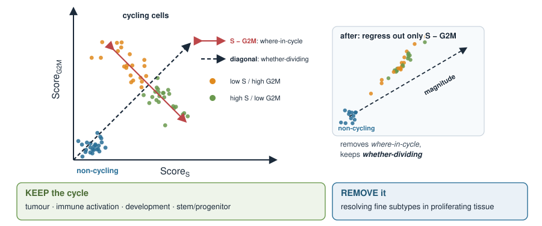
The broader point: PCs are axes of variation
Cell cycle is the cleanest example of a general truth from the Applications block: a principal component is whatever varies most — and that can be anything.
A top PC might actually be…
Diagnose by correlating PC scores with…
Cell cycle
S.Score, G2M.Score
Sequencing depth
total counts per cell (nCount_RNA)
Mitochondrial / stress
percent.mt
Batch / donor
batch or donor label
Ambient / background RNA
empty-droplet profile
Real cell identity
marker genes of the cell type
PCA is unsupervised: it hands you directions, not labels. Interpreting each component — biological signal vs. technical artefact — is the analyst’s job.
Summary
Idea
Key point
Cell cycle
a strong, coordinated transcriptional program (G1 / S / G2M)
Why it matters
in single-cell data it is a major axis of variation
Scoring
average phase-marker expression minus a background control → S.Score, G2M.Score, Phase
Link to PCA
co-expressed cycle genes → high variance → often a top PC
Diagnose a PC
read loadings; correlate PC scores with the covariate
Confounding
clustering runs on PCA, so the cycle can split or merge clusters
Regress out
per-gene lm on the scores, keep residuals, then re-run PCA
Judgement
remove only if proliferation is a nuisance, not the biology
Big lesson
PCA components are axes of variation — interpret them
This closes the loop from Principal component analysis: a PC is a direction, and its meaning is an empirical, biological question.